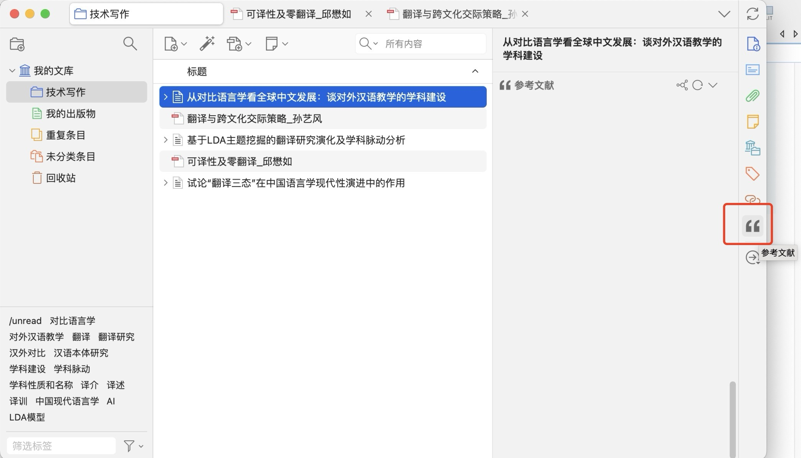
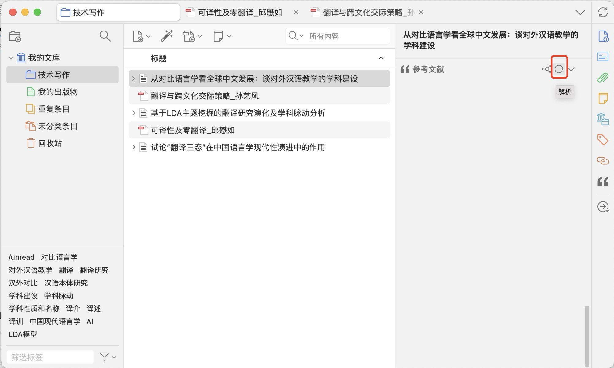
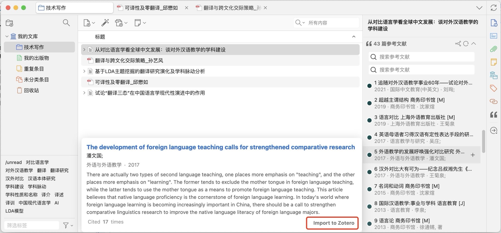

6.1.2.3 使用参考文献提取插件进行阅读 参考文献提取插件可为您提取正在阅读中的文献的参考文献条目，进行延伸阅读，提高您的学术研究效率（插件安装）。 注： 确保需要提取的文献所列出的参考文献格式可读（推荐读取从知网等学术网站中直接导入的文献）。 点击右侧菜单栏中的参考文献选项。  点击此按钮进行解析。  如果需要对某篇文献进行引用可将鼠标移动到文献的选项框上，然后点击Import to Zotero，会跳转至目标文献的网页，之后按照正常导入程序进行导入即可。 